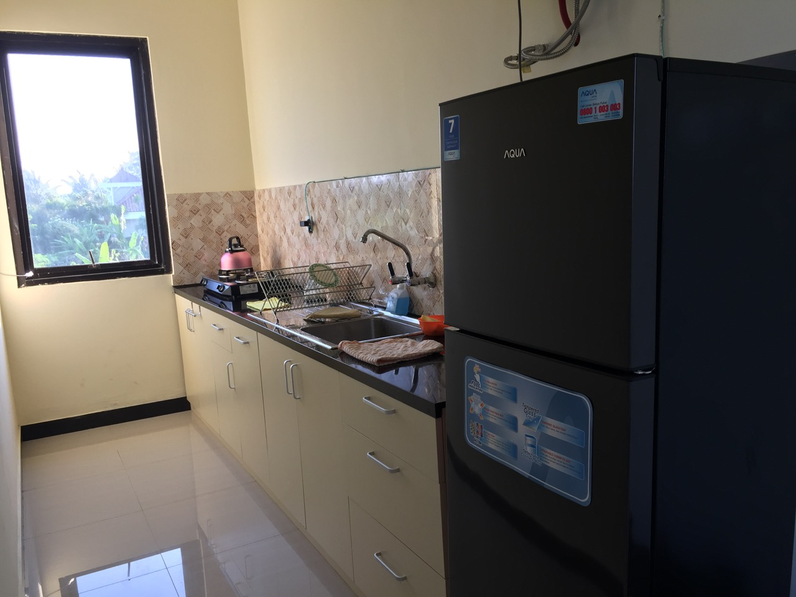

Our shared self-use kitchen (upstairs) is equipped with a full-size fridge, gas stove, toaster, blender, drinking water, coffee, tea, cooking utensils, crockery and cutlery.
Наша общая кухня для самостоятельного использования (наверху) оснащена полноразмерным холодильником, газовой плитой, тостером, блендером, питьевой водой, кофе, чаем, посудой и столовыми приборами.
